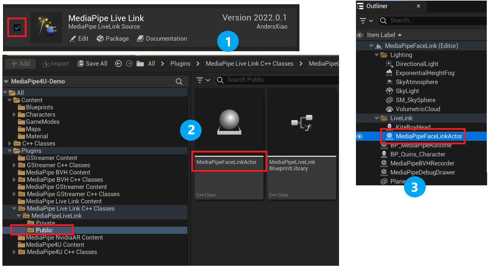
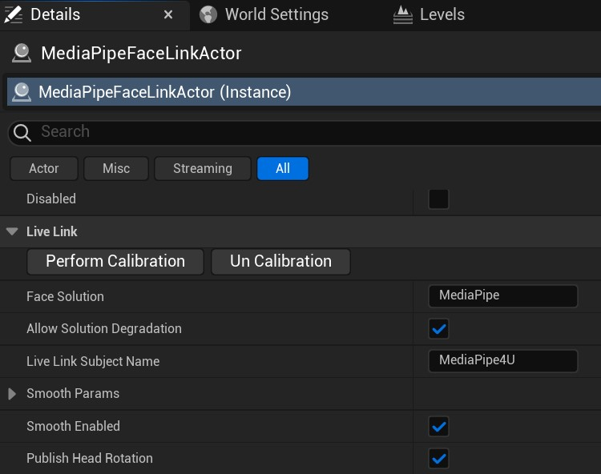
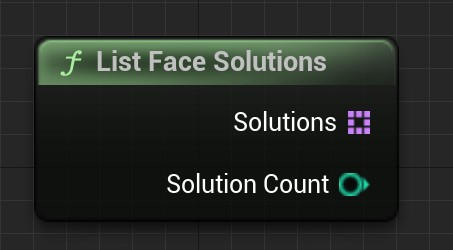
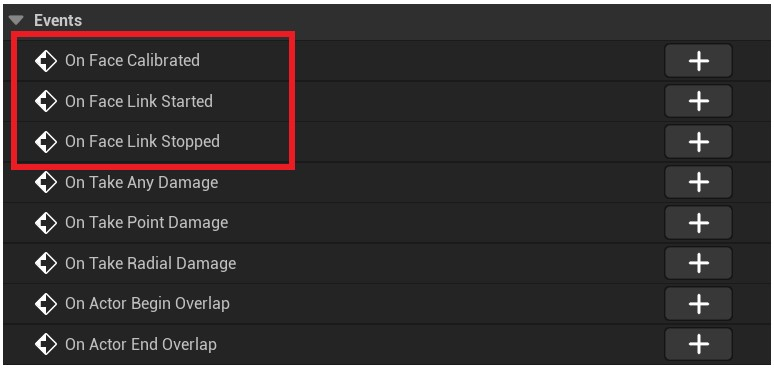
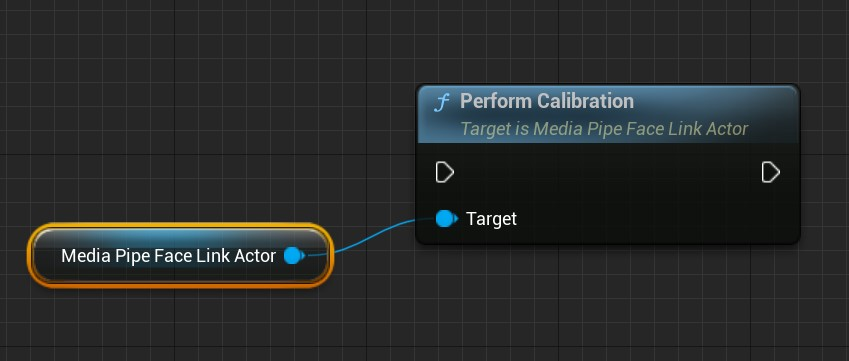
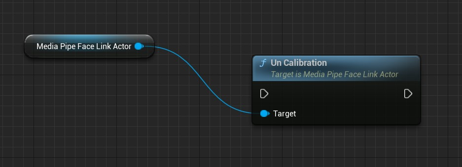
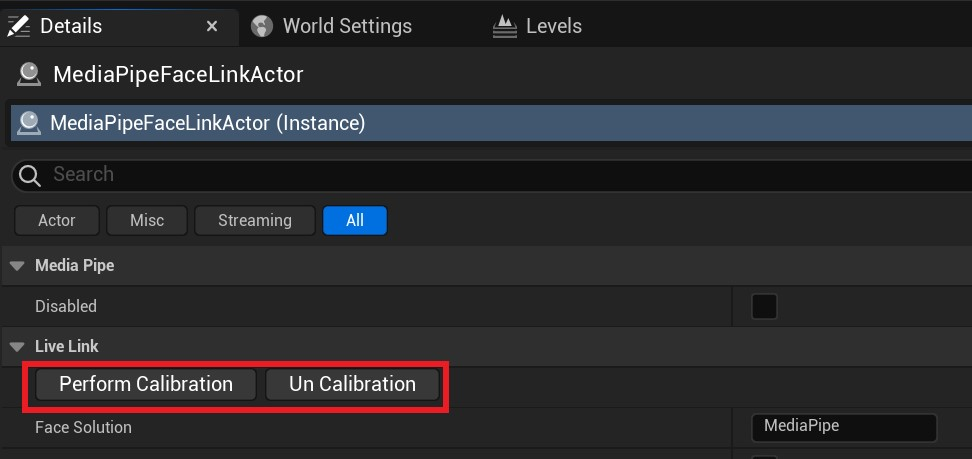

使用表情捕捉¶
MediaPipe4U 在插件 MediaPipe4ULiveLink 中包含了表情捕捉功能，该插件使用一个独立的 Actor（AActor Class）来完成从图像源（ImageSource）中求解 BlendShape 的功能。
{kind=link}
Tip
如果你在 Apple 设备上用过 Epic 的 Live Link Face App ，你可以把这个 Actor 看做 Live Link Face App 的模拟，它从图像源中求解兼容 Apple Arkit 标准的 51 个表情 (tongueOut 不支持)，并通过 和 Live Link Face App 一致的 Live Link 格式数据发送数据，因此你可以像接收 Live Link Face App 一样接收来自 MediaPipe4U 的 BS 计算结果。
虽然它还不具备 Live Link Face App 的某些功能，例如，数据录制，头部算解等，但是，随着 MediaPipe4U 持续的开发，这些功能将会集成到这个 Actor 中。
配置插件¶
- 启用 Epic 的
Live Link插件 - 复制
MediaPipe4ULiveLink文件夹到项目的 Plugins 目录。 - 在项目中启用
MediaPipe Live Link插件。 - 在插件 C++ 目录中找到
MediaPipeFaceLinkActor, 将它拖放到你的 Level 中。 - 选中
MediaPipeFaceLinkActor，在细节面板中对 Actor 进行配置。

当 MediaPipe 动作捕捉开始后（ MediaPipeHolisticComponent 组件 Start 之后），会自动开始表情捕捉，并且向 LiveLink 接收端（通常是你的 LiveLinkPose 动画蓝图节点）发送数据。
属性¶
MediaPipeFaceLinkActor 属性很少，表情捕捉本身也不需要太多参数，MediaPipeFaceLinkActor 参数使用默认值已经工作良好。

FaceSolution
FaceSolution 属性表示要使用的方案名称。FaceLinkActor 可以支持在多种 BlendShape (BS) 求解算法中切换，这里的每一种算法就是一个方案（Face Solution）"。
默认值: MediaPipe
默认的 MediaPipe 方案不依赖任何硬件，有着良好的适用性
AllowSolutionDegradation
是否允许方案（solution）降级回退。
表情求解器启动后，当 FaceSolution 被设置为一个不存在的方案时，如果 bAllowSolutionDegradation 属性设置为 true，将回退到 "MediaPipe" 方案， 如果属性为 false，表情求解器将启动失败，并在日志中打印错误。
LiveLinkSubjectName
用来指定 LiveLink 发送数据的 Subject 名称，如果你在动画蓝图中使用 LiveLinkPose 节点，这里的名称应该和 LiveLinkPose 节点上的 Subject 属性一致，以便动画蓝图节点可以从 MediaPipe4U 接收数据。
默认值: MediaPipe4U
SmoothParams
指定表情的各个区域的平滑程度，和设置平滑算法的参数，关于这个参数的详细信息，下文进行详细说明。
SmoothEnabled
有的时候，可能你希望使用自己的平滑算法，这个开关用来开启/关闭插件内置的平滑算法。
默认值: true
PublishHeadRotation
是否启用头部旋转求解，如果为 true ，会额外传递三个曲线到 LiveLink, 它们分别是 HeadPitch, HeadRoll, HeadYaw。
默认值: true
Tip
并不是所有的 Face Solution 都支持头部旋转求解，你的程序应该考虑不同方案对头部旋转的支持会不同。
Disabled
是否禁用 MediaPipe4U 的 BS 求解，当设置为 true，将不再发送 MediaPipeFaceLinkActor 数据。
Face Solution¶
MediaPipeFaceLinkActor 通过 Face Solution 支持不同的算法，因为某些算法对硬件可能有特殊要求，可以选择适合你的 Face Solution 进行面补。
内置的 Face Solution¶
- MediaPipe
- Remoting (需要使用 M4URemoting App, 付费版)
- NvAR (需要 MediaPipe4U NvAR 插件)
目前来说 NvAR 方案精度高于 MediaPipe。
Warning
当 MediaPipe4U 动作捕捉开始以后，虽然你可以设置 FaceSolution，但是它并不会生效，必须停止动作捕捉再启动才能切换方案。
简单来说，FaceSolution 不能在 mediapipe 运行过程中切换。
你可以通过蓝图库 MediaPipeLiveLinkBlueprintLibrary 中的函数 ListFaceSolutions 列出当前可用的方案：

该函数返回一个方案列表和方案个数。
动画平滑¶
MediaPipeFaceLinkActor 可以按面容的不同区域来平滑表情，主要通过 SmoothParams 属性来进行设置。
SmoothParams 属性如下：
| 属性 | 说明 |
|---|---|
| Iterations | 平滑算法迭代次数，主要用来消除抖动，数值越大，抖动越少，但是对表情的敏感度也会越低。 |
| EyesSmooth | 眼睛区域的 BS 平滑度，0.0 - 1.0, 数值约大，平滑度越高。 |
| EyeBallsSmooth | 眼球区域的 BS 平滑度，0.0 - 1.0, 数值约大，平滑度越高。 |
| BrownSmooth | 眉毛区域的 BS 平滑度，0.0 - 1.0, 数值约大，平滑度越高。 |
| MouthSmooth | 嘴巴区域的 BS 平滑度，0.0 - 1.0, 数值约大，平滑度越高。 |
| CheekSmooth | 脸颊区域的 BS 平滑度，0.0 - 1.0, 数值约大，平滑度越高。 |
| JawSmooth | 下巴区域的 BS 平滑度，0.0 - 1.0, 数值约大，平滑度越高。 |
| NoseSmooth | 鼻子区域的 BS 平滑度，0.0 - 1.0, 数值约大，平滑度越高。 |
| HeadSmooth | 头部旋转平滑度，0.0 - 1.0, 数值约大，平滑度越高，要求 Face Solution 能够支持头部旋转求解。 |
如果你在动画蓝图中进行平滑处理或算法自带了平滑，请通过
SmoothEnabled函数关闭插件内置的平滑。
事件¶

MediaPipeFaceLinkActor 不支持手动启动/停止，而是自动跟随 mediapipe 启停。为此，MediaPipeFaceLinkActor 暴露了必要的事件，让你知道它何时启动和停止。
OnFaceLinkStarted
当 MediaPipeFaceLinkActor 开始表情捕捉流程时触发该事件。
OnFaceLinkStarted
当 MediaPipeFaceLinkActor 停止表情捕捉流程时触发该事件。
OnFaceCalibrated
当面容校准完成时触发该事件。
校准¶
从不同的人面容中捕捉的表情可能会产生差异，例如一个人的眼睛大小可能影响 EyeBlink 相关的 BS 数值，为此 MediaPipeFaceLinkActor 提供了对面容进行校准的功能。
完成面容校准仅需调用 PerformCalibration 函数。

Warning
PerformCalibration 是一个异步函数，调用结束时面容并不会立即被校准，它需要等待下一帧 blend shapes 数据才能完成校准, 完成校准后会通过 OnFaceCalibrated 事件来
通知应用程序。
PerformCalibration 必须在 mediapipe 运行过程中调用才能校准，因为它需要 bs 数据帧，如果在 mediapipe 停止状态调用 PerformCalibration，
将永远不会触发 OnFaceCalibrated 回调。
可以通过 MediaPipeHolisticComponent::IsRunning 函数或 MediaPipeAnimationInstance::IsMediaPipeRunning 函数来判断 mediapipe 是否正在运行。
如果你希望使用上次的校准数据（虽然并不推荐这样做）来校准面容，你也可以使用 PerformCalibrationImmediately 函数通过传递一个帧数据来立即校准。
PerformCalibrationImmediately 函数不关心 mediapipe 是否正在运行，因此你可以在任何时候校准面容。
Tip
虽然你可以在任何情况下使用 PerformCalibrationImmediately 函数，但是你必须确保你将要校准的 Face Solution 和用来校准的帧数据是相同的 Face Solution，你应该注意下面的问题：
- 由于
MediaPipeFaceLinkActor存在自动降级行为，要获取实际正在使用的 FaceSolution， 你不能通过FaceSolution来获取，而应该使用GetActualFaceSolution函数来获取正在运行的方案。 - 必须注意：
GetActualFaceSolution仅在 mediapipe 运行过程中才能返回正确的方案名称，如果 mediapipe 停止，它将返回空字符串。
综上，不建议你在 mediapipe 停止时进行面容校准，这会增加很多不必要的麻烦，建议你永远在 mediapipe 运行过程中进行面容校准操作。
校准数据清理¶
校准后将记录面容的信息，你可以通过 UnCalibration 函数来清理这些校准数据。

UE 编辑器中校准¶
为了方便开发，你也可以在编辑器中进行校准操作，细节面板中提供了校准和清理校准的按钮。

不同 Face Solution 对 Blend Shapes 的支持¶
| 名称 | MediaPipe | Remoting | NvAR | 说明 |
|---|---|---|---|---|
| eyeBlinkLeft | ✅ | ✅ | ✅ | 左眼眨眼 |
| eyeLookDownLeft | ✅ | ✅ | ✅ | 左眼目视下方 |
| eyeLookInLeft | ✅ | ✅ | ✅ | 左眼注视鼻尖 |
| eyeLookOutLeft | ✅ | ✅ | ✅ | 左眼向左看 |
| eyeLookUpLeft | ✅ | ✅ | ✅ | 左眼目视上方 |
| eyeSquintLeft | ✅ | ✅ | ✅ | 左眼眯眼 |
| eyeWideLeft | ✅ | ✅ | ✅ | 左眼睁大 |
| eyeBlinkRight | ✅ | ✅ | ✅ | 右眼眨眼 |
| eyeLookDownRight | ✅ | ✅ | ✅ | 右眼目视下方 |
| eyeLookInRight | ✅ | ✅ | ✅ | 右眼注视鼻尖 |
| eyeLookOutRight | ✅ | ✅ | ✅ | 右眼向左看 |
| eyeLookUpRight | ✅ | ✅ | ✅ | 右眼目视上方 |
| eyeSquintRight | ✅ | ✅ | ✅ | 右眼眯眼 |
| eyeWideRight | ✅ | ✅ | ✅ | 右眼睁大 |
| jawForward | ✅ | ✅ | ✅ | 努嘴时下巴向前 |
| jawLeft | ✅ | ✅ | ✅ | 撇嘴时下巴向左 |
| jawRight | ✅ | ✅ | ✅ | 撇嘴时下巴向右 |
| jawOpen | ✅ | ✅ | ✅ | 张嘴时下巴向下 |
| mouthClose | ✅ | ✅ | ✅ | 闭嘴 |
| mouthFunnel | ✅ | ✅ | ✅ | 稍张嘴并双唇张开 |
| mouthPucker | ✅ | ✅ | ✅ | 抿嘴 |
| mouthLeft | ✅ | ✅ | ✅ | 向左撇嘴 |
| mouthRight | ✅ | ✅ | ✅ | 向右撇嘴 |
| mouthSmileLeft | ✅ | ✅ | ✅ | 左撇嘴笑 |
| mouthSmileRight | ✅ | ✅ | ✅ | 右撇嘴笑 |
| mouthFrownLeft | ✅ | ✅ | ✅ | 左嘴唇下压 |
| mouthFrownRight | ✅ | ✅ | ✅ | 右嘴唇下压 |
| mouthDimpleLeft | ✅ | ✅ | ✅ | 左嘴唇向后 |
| mouthDimpleRight | ✅ | ✅ | ✅ | 右嘴唇向后 |
| mouthStretchLeft | ✅ | ✅ | ✅ | 左嘴角向左 |
| mouthStretchRight | ✅ | ✅ | ✅ | 右嘴角向右 |
| mouthRollLower | ✅ | ✅ | ✅ | 下嘴唇卷向里 |
| mouthRollUpper | ✅ | ✅ | ✅ | 下嘴唇卷向上 |
| mouthShrugLower | ✅ | ✅ | ✅ | 下嘴唇向下 |
| mouthShrugUpper | ✅ | ✅ | ✅ | 上嘴唇向上 |
| mouthPressLeft | ✅ | ✅ | ✅ | 下嘴唇压向左 |
| mouthPressRight | ✅ | ✅ | ✅ | 下嘴唇压向右 |
| mouthLowerDownLeft | ✅ | ✅ | ✅ | 下嘴唇压向左下 |
| mouthLowerDownRigh | ✅ | ✅ | ✅ | 下嘴唇压向右下 |
| mouthUpperUpLeft | ✅ | ✅ | ✅ | 上嘴唇压向左上 |
| mouthUpperUpRight | ✅ | ✅ | ✅ | 上嘴唇压向右上 |
| browDownLeft | ✅ | ✅ | ✅ | 左眉向外 |
| browDownRight | ✅ | ✅ | ✅ | 右眉向外 |
| browInnerUp | ✅ | ✅ | ✅ | 蹙眉 |
| browOuterUpLeft | ✅ | ✅ | ✅ | 左眉向左上 |
| browOuterUpRight | ✅ | ✅ | ✅ | 右眉向右上 |
| cheekPuff | ✅ | ✅ | ✅ | 脸颊向外 |
| cheekSquintLeft | ✅ | ✅ | ✅ | 左脸颊向上并回旋 |
| cheekSquintRight | ✅ | ✅ | ✅ | 右脸颊向上并回旋 |
| noseSneerLeft | ✅ | ✅ | ✅ | 左蹙鼻子 |
| noseSneerRight | ✅ | ✅ | ✅ | 右蹙鼻子 |
| tongueOut | ⭕ | ⭕ | ⭕ | 吐舌头 |
| HeadYaw | ⭕ | ⭕ | ✅ | 左右转头 |
| HeadPitch | ⭕ | ⭕ | ✅ | 上下抬头 |
| HeadRoll | ⭕ | ⭕ | ✅ | 向肩膀偏头 |
关于 Arkit 的 BlendShape 标准，你可以查看这里